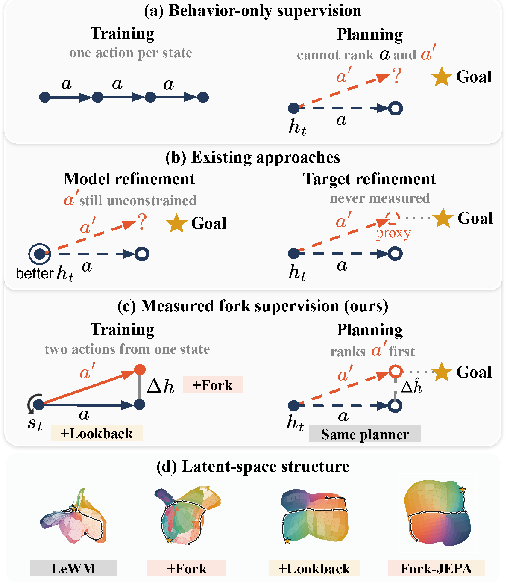
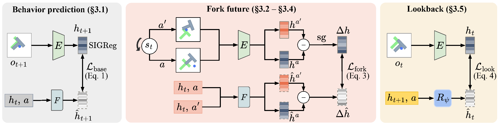
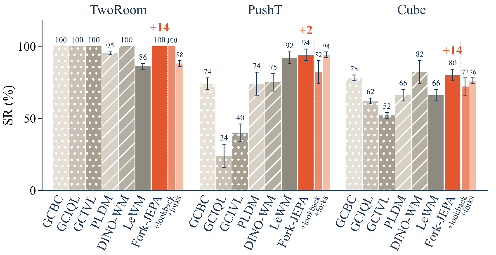
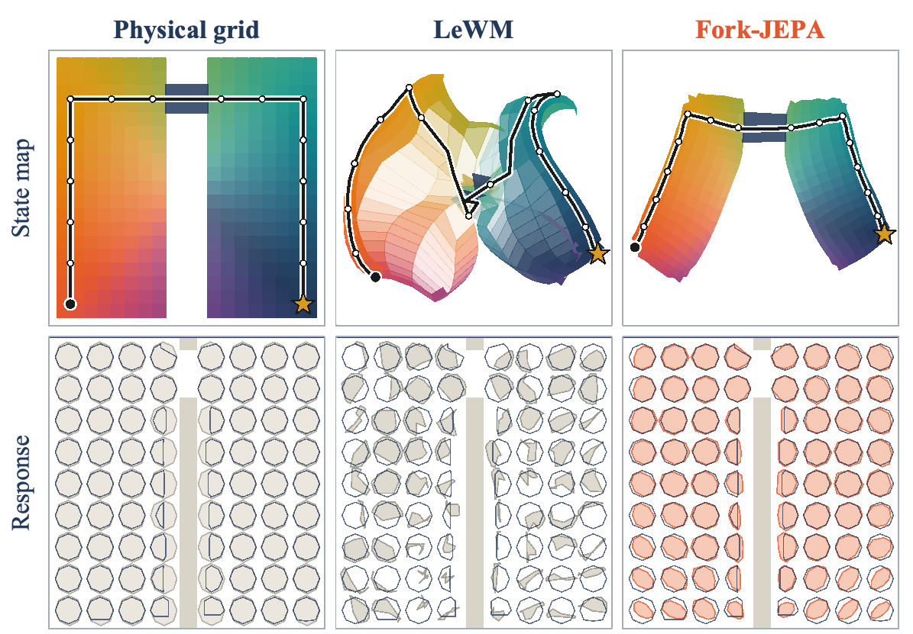
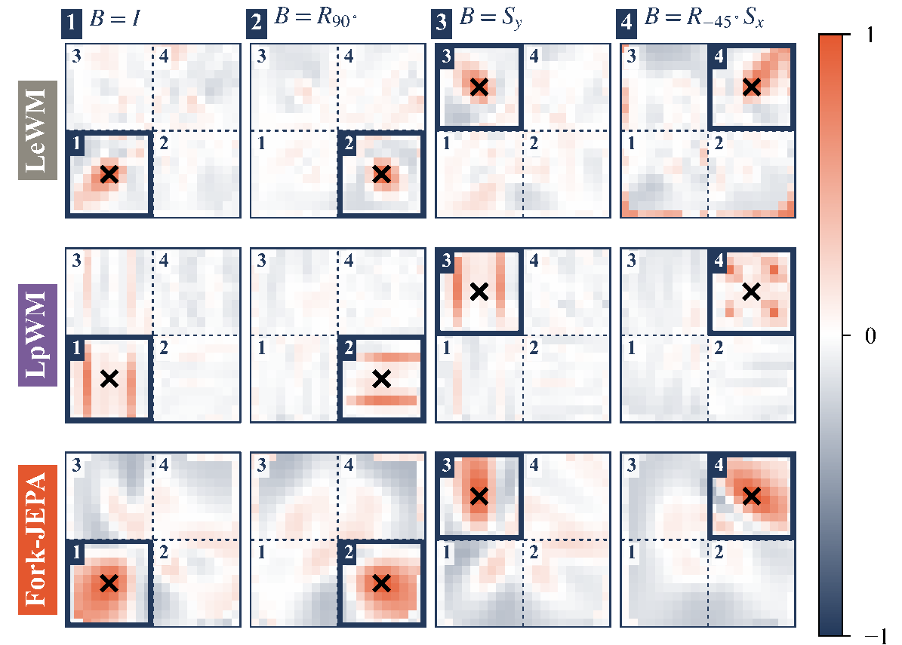
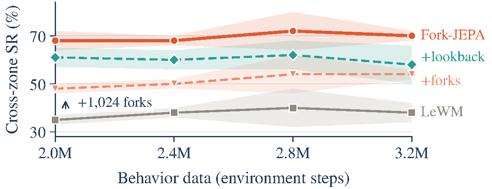

Fork-JEPATwo Actions from One State:
Fork Futures Teach JEPA World Models to Compare
Two actions. Measured futures.
Explore recorded planning executions on three visual control tasks and a dynamics-regime world.
Recorded simulator executions, with model labels embedded in each clip. These existing clips are selected qualitative examples, not a new evaluation run. Quantitative results below follow the updated manuscript.
Abstract
JEPA world models are trained to predict logged transitions but used to compare counterfactual actions from one state. The logged behavior data show one action per state, and under a local linear approximation we prove the action response is unidentified along any direction the policy never varies within a state. We therefore supplement behavior data with measured outcomes of alternative actions from the same state. Our fork futures execute two actions from one restored state, and their outcome difference cancels the state term, identifying the action response on the sampled span. The resulting model, Fork-JEPA, matches predicted to measured differences, anchors the logged successor with behavior prediction, and adds a lookback head that keeps the predecessor recoverable, all at training time, leaving planning unchanged. On three visual control tasks, behavior-only training leaves the predicted action effect no better than a constant guess. Fork-JEPA makes it readable and raises planning success by up to 14% over LeWM, its base model. Where the action response changes across hidden zones, it nearly doubles cross-zone success, and 1,024 fork pairs beat 1.2M extra behavior steps. Our project is available here.
The comparison is missing from the data
A planner compares actions at one state. A logged trajectory shows only one.
A model can fit every logged transition and still leave alternative actions unconstrained. Under a local linear response model, the action response is unidentified along directions that the behavior policy never varies within a state.
Changing the model or synthesizing new prediction targets does not itself measure the missing outcome. Fork futures change what the data show: restore a state, execute two actions, and observe both successors.
Subtracting their outcomes cancels the shared state term. The resulting supervision identifies the response on the sampled action span; lookback encourages the representation to retain the predecessor.


A training-only change


Predict the logged outcome
The base loss combines successor prediction with SIGReg. It anchors the pair: matching a difference alone cannot prevent both predictions from shifting together.
Match the measured difference
Two action blocks start from the same restored state. Their encoded outcome difference is the stop-gradient target for the difference between predictions.
Recover the predecessor
The lookback head reconstructs the preceding latent from the measured successor and action. The shared encoder learns to retain recoverable state information.
L = Lbase + λforkLfork + λlookLlook
Fork collection and the reverse head are used only during training. At evaluation, the same world-model architecture and CEM planner are used.
Better comparisons, better plans
The same planner, with gains on every visual control task.
World models are retrained in a shared pipeline and evaluated on 50 shared development episodes over three seeds. CEM searches over five action blocks of five steps. Fork-JEPA uses 1,000 fork pairs on TwoRoom, 2,000 on PushT, and 1,000 on Cube.


| Model | TwoRoom | PushT | Cube |
|---|---|---|---|
| LeWM | 86 ± 2 | 92 ± 4 | 66 ± 4 |
| Fork-JEPA | 100 ± 0 | 94 ± 4 | 80 ± 4 |
| Gain | +14 pp | +2 pp | +14 pp |
Fork-JEPA matches DINO-WM on TwoRoom and is comparable on Cube within seed variation (80 ± 4% versus 82 ± 8%). The PushT improvement is small relative to seed variation. On Cube, contact-dependent effects and limited coverage of gripper configurations remain challenging.
Planning cost stays similar, while training costs more. In the PushT timing study, training increases from 6.045 to 9.646 hours (+59.6%). CPU planning time is similar: 24.090 versus 24.352 seconds per episode. The interaction count increases from 2.34M to 2.36M environment steps.
Predicting a state is not predicting an action effect
M-ID reads physical state from predicted latents. M-ID-∆ instead tests whether predicted branch differences carry the physical effect of changing an action. Its readout is fitted on measured differences and frozen; scores average over rollout depths one through five.
| Model | TwoRoom | PushT | Cube |
|---|---|---|---|
| LeWM | −0.10 ± 0.12 | 0.08 ± 0.16 | 0.00 ± 0.10 |
| Fork-JEPA | 0.69 ± 0.07 | 0.30 ± 0.10 | 0.06 ± 0.06 |
On TwoRoom, LeWM achieves a state readout of 0.91 but an action-effect score of −0.10. Fork-JEPA improves both, to 0.98 and 0.69. On PushT and Cube, even the measured branch differences have low linear readability; Fork-JEPA improves measured and predicted scores, although Cube’s effect remains small.


Fork-JEPA forms coherent room regions connected at the doorway. In the wall-grid test, median predicted response error is 0.029 versus 1.10 for LeWM. The action-effect advantage persists through rollout depths one to five.
When the same action has different effects
Four hidden zones. Four action-response matrices.
The regime world changes how actions move the agent across four zones. Models share 10,000 behavior episodes, architecture, initialization, and training budget. Evaluation uses 200 fixed start–goal pairs, half cross-zone, with replanning after every block. Fork-JEPA adds 1,024 measured fork pairs and lookback.
| Model | H = 5 | H = 10 | H = 15 | H = 20 |
|---|---|---|---|---|
| LeWM | 25 | 35 | 30 | 29 |
| LpWM | 44 | 41 | 35 | 28 |
| LpWM + TJ | 50 | 61 | 54 | 33 |
| Fork-JEPA | 61 | 68 | 52 | 37 |


Recognizing a zone is not predicting its response
At horizon 10, Fork-JEPA reaches 68% cross-zone success, versus 35% for LeWM and 41% for LpWM. LpWM identifies zones more accurately (96.6% versus 88.4%) yet plans worse.
The difference is in action-effect prediction. Fork-JEPA’s worst-zone predicted action-map error is 0.221, compared with 0.739 for LeWM and 0.261 for LpWM.
Targeted measurements beat more of the same data


Adding 60% more behavior data raises LeWM’s cross-zone success from 35% to 38%. Adding 1,024 fork pairs, about 0.5% additional interaction, raises it to 48% at the original budget. The complete Fork-JEPA model reaches 68%. These are different comparisons: the 48% result isolates forks; the 68% result also includes lookback.
Measured forks complement other model designs
The updated comparison adds the same measured fork pairs and difference loss to existing methods. Planning improves across multiple model designs, including methods with privileged physical-state supervision or test-time adaptation.
| Base model | TwoRoom | Cube | Cross-zone, H = 10 |
|---|---|---|---|
| PLDM | 95 / 99 | 66 / 74 | 58 / 62 |
| LpWM | 96 / 98 | 69 / 72 | 41 / 52 |
| GA-WM | 98 / 100 | 74 / 78 | 71 / 73 |
| AdaJEPA | 94 / 100 | 74 / 78 | 42 / 54 |
GA-WM uses privileged physical-state labels; AdaJEPA adapts at test time. These are complementary-supervision experiments, not an image-only ranking under identical information access.
The predictor benefits even with the encoder frozen
| Encoder / training | TwoRoom M-ID-∆ | TwoRoom SR | PushT SR | Cube SR |
|---|---|---|---|---|
| DINOv2 / DINO-WM | 0.26 | 100 | 75 | 82 |
| DINOv2 / + forks | 0.71 | 100 | 90 | 88 |
| LeWM / retrained predictor | 0.01 | 86 | 92 | 66 |
| LeWM / + forks | 0.21 | 94 | 94 | 72 |
Holding the encoder fixed separates predictor supervision from representation learning. Forks improve the action-effect readout with both encoders and improve planning on several tasks.
Lookback and forks play different roles
Lookback alone solves TwoRoom, but it is not uniformly beneficial: on PushT, it lowers success from 92% to 82% and weakens block-orientation readout. Forks alone or together with lookback reach 94%. On Cube, lookback and forks individually reach 72% and 76%; together they reach 80%.
In the regime world, lookback raises cross-zone success from 35% to 61%. Adding forks raises it to 68% and reduces predicted action-map error from 0.890 to 0.087. Measured branch regression also helps: with lookback it reaches 67%, close to difference matching’s 68%; without lookback, difference matching reaches 48% versus 42% for direct regression.
Scope and limitations
The identifiability result is local, assumes an additive response linear in the action, and applies to the sampled action span. Directional coverage does not ensure coverage of every state-dependent response. With nonlinear dynamics, cancellation is approximate.
Restoring exactly the same state is also important. In the regime-world stress test, planning success stays within seven percentage points of exact restoration even at large starting-state offsets, while worst-zone action-map error grows from 0.22 to 6.66. Robust planning does not imply that the measured response remains accurate.
The visual-task evaluation uses development episodes, and the interactive clips above are selected qualitative examples. Real-world deployment with approximate restoration remains a possibility to investigate, not a demonstrated result here.